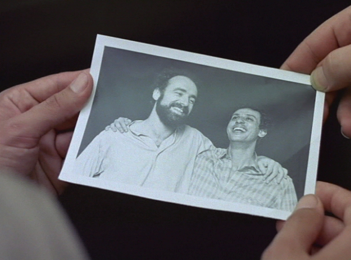

AQUELES DOIS (Aquellos dos)
|
(35 mm, 75 min, color, 1985) Raúl es extrovertido y juguetón. Viene de un casamiento frustrado y se la pasa todo el tiempo escuchando y tocando melancólicos boleros en el pequeño apartamento donde vive. Saúl es tímido, de espíritu crítico y amargo. Viene de un noviazgo tan interminable que un día terminó. También de un reciente intento de suicidio. Raúl y Saúl son dos personas sencillas, sensibles, solitarias, y se conocen en el primer día de trabajo en una sección pública. |
 Foto por Cesar Charlone: Beto Ruas y Pedro Wayne |
{kind=link}
Dirección: Sérgio Amon
Producción Ejecutiva: Sérgio Lerrer
Guión: Sérgio Amon, Roberto Henkin e Pablo Vierci
Dirección de Fotografia: Cesar Charlone
Música: Augusto Licks
Dirección de Producción: Rudi Lagemann y Marlise Storchi
Montaje: Roberto Henkin y Sérgio Amon
Assistente de Dirección: Giba Assis Brasil,Alex Sernambi y Rudi Lagemann
Distribución: Casa de Cinema PoA
Elenco Principal:
Pedro Wayne (Saul)
Beto Ruas (Raul)
Suzana Saldanha (Clara Cristina)
Premios
- 1º Rio Cine Festival, 1985:
Premio Especial de la Industria Cinematográfica.
- 1º Festival del Cine Brasileño, Fortaleza, 1985:
Mejor Película (Jurado Oficial y Premio de la Crítica), Mejor Fotografía, Mejor Actor Coadyuvante (Pedro Ruas), Mejor Música Original, Mejor Edición de Sonido
- 11th International Gay and Lesbian Film Festival, San Francisco, EE.UU., 1987 &única película brasileña concursante
Crítica
"Los gays están osados. Basado en un cuento homónimo de Caio Fernando Abreu, (AQUELLOS DOS) acompaña la sufrida trayectoria de dos heterosexuales desilusionados - uno con el casamiento, el otro con un noviazgo aburrido - que deciden vivir juntos y hacer aquello que, según d. Eugênio Salles, Dios resolvió castigar inventando el SIDA. Al fondo, embalando las angustias y los prejuicios de siempre, una banda sonora para que ningún nostálgico encuentre defectos: 'Tu me acostumbraste', 'Sabor a mi' y otros bolerones con los que los masoquistas de la década de 50 (gays o héteros) apaciguaban sus dolores."
(Sérgio Augusto, FOLHA DE SÃO PAULO, 09/08/85)"Con poco más de una hora de duración, AQUELLOS DOS se revela una película de sorprendente densidad dramática. (...) La bravura del cineasta, enfrentando un tema tan difícil como el surgimiento de una posible relación homosexual entre dos sujetos presumiblemente heterosexuales, se demuestra más especialmente en la contención con que la historia va siendo armada que en las explosiones de carácter de los personajes. (...) Los artificios que los guionistas lanzaron mano para alargar la trama son eficientes, pero tal vez no convincentes. (...) Talvez una duración pero menor condensase más su carga dramática, favoreciendo el impacto."
(Tuio Becker, CORREIO DO POVO, Porto Alegre, 12/12/87)
10/12/1987